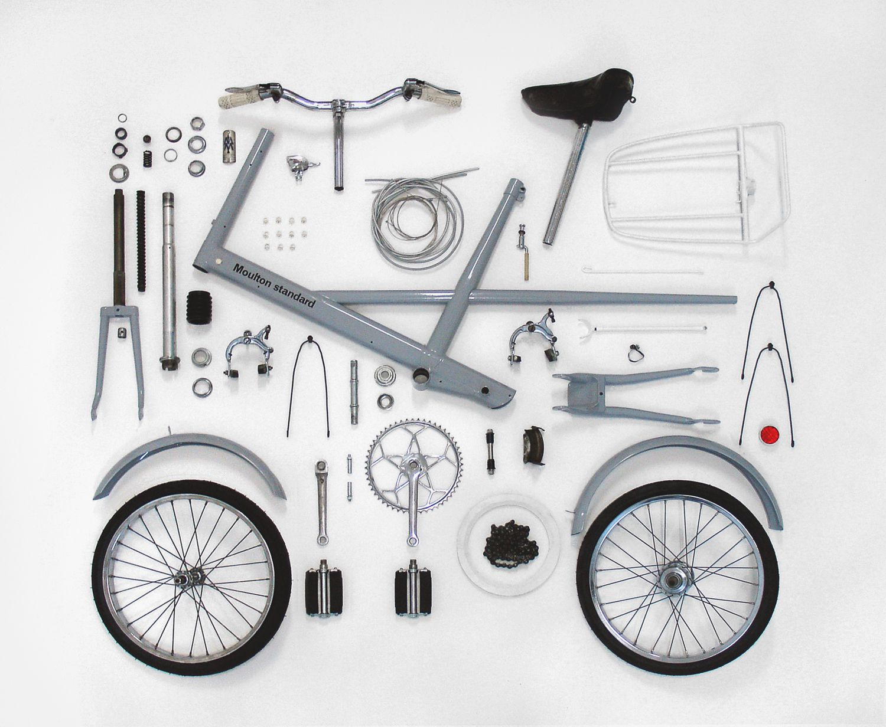
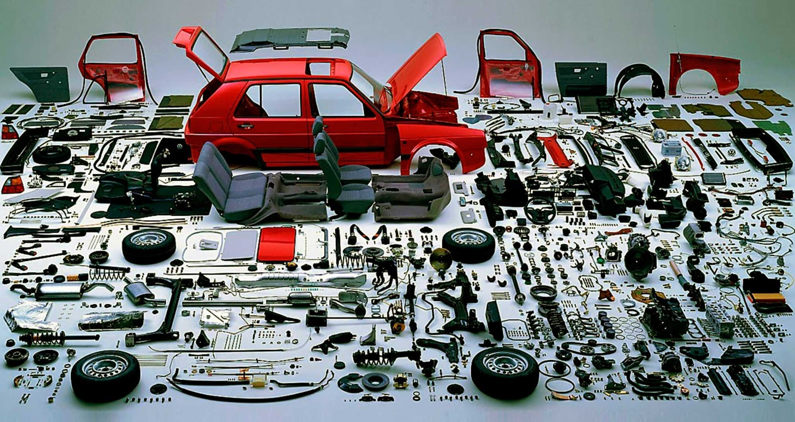
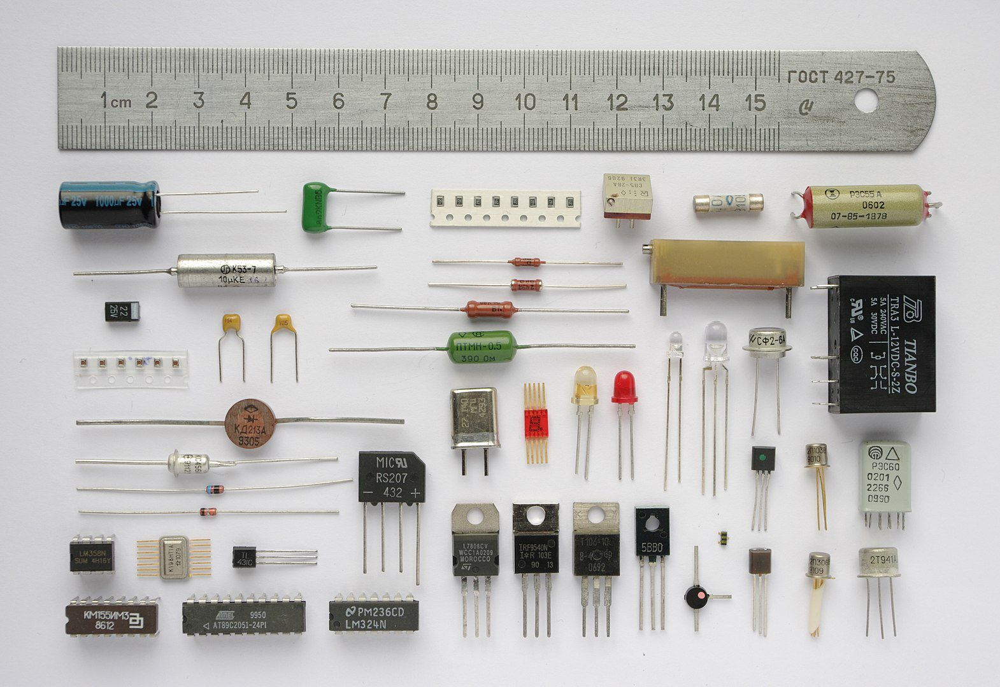
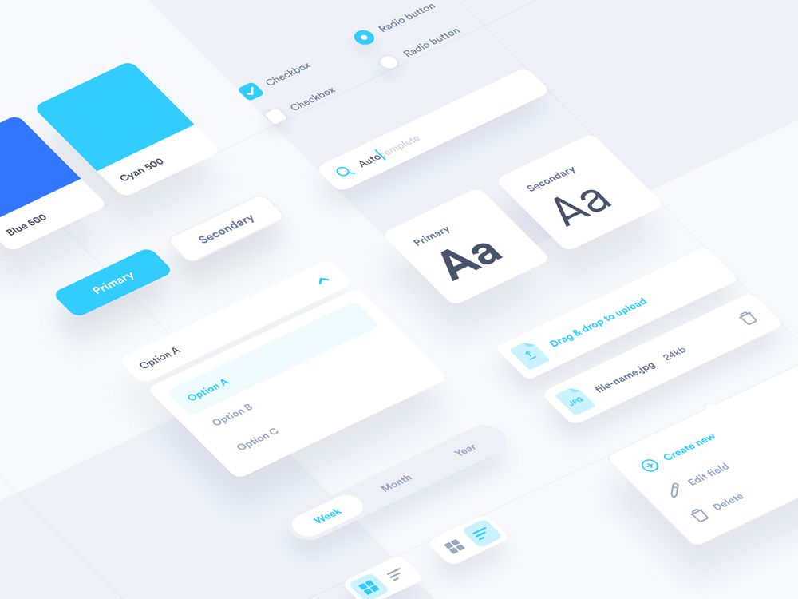

+++
title = "Tasarım Sözlüğü: Component"
seotitle ="Component Nedir? Anlamı ve Kullanımı"
description="Latin kökenli terim olan component; mühendislikte, tasarımda veya yazılımda sıklıkla karşımıza çıkan bir kelimedir. Meydana getiren parçalara denmektir."
url="sayi-8/component-nedir"
aciklama="Latin kökenli terim olan component; mühendislikte, tasarımda veya yazılımda sıklıkla karşımıza çıkan bir kelimedir. Com (ile, birlikte) + Ponere (Latince, Türkçe karşılığı: yer) (İngilizce: to place) (yerleştirmek) anlamını taşıyarak bir araya getirmek, meydana getiren parçalar olarak algılamak mümkün."
type="sayfa"
thumb="/img/tasarimda-component-nedir-thumbnail.jpg"
date = "2021-04-01"
sayi=["08"]
sayfa="03"
yazar=["atahan gokturk"]
tags= ["ana sayfa", "dergi", "tasarim sozlugu"]
+++

<div class="container">
   <h3>Etimolojisi</h3>
    <div class="row">
   <div class="col-md-6">   <p>
      Latin kökenli terim olan component; mühendislikte, tasarımda veya
      yazılımda sıklıkla karşımıza çıkan bir kelimedir. Com (ile, birlikte) +
      Ponere (Latince, Türkçe karşılığı: yer) (İngilizce: to place)
      (yerleştirmek) anlamını taşıyarak bir araya getirmek,
      <strong>meydana getiren parçalar</strong> olarak algılamak mümkün.
   </p></div>
   <div class="col-md-6">   <p>
      
   </p></div>
    </div>
    <div class="row">
         <div class="col-md-6"><p>Component, Türkçeye <strong>bileşen</strong> olarak geçmiştir.</p>
   <p>
      TDK&#39;de bileşenin anlamı &quot;Bir bileşke oluşturan kuvvetlerin her
      biri.&quot;
   </p>
   <p>
      Bileşke ise: &quot;Bir araya gelme, toplaşma, birleşme.&quot; anlamını
      taşır.
   </p>
   <p>
      Türk Dil Kurumu fizikte kullanılan terimi ön plana alarak açıklama yapmış
      olsa da üretim bağlamında düşünecek olursak,
      <strong>ürünü meydana getiren parçaların her biri</strong> şeklinde anlam
      yüklemek doğru olacaktır.
   </p></div>
         <div class="col-md-6"><p>
      Component farklı alanlarda karşımıza çıkmış olsa da kelime anlamını ve
      kökenini bildiğimizde çıkarsama yapmak oldukça kolay olacaktır.
   </p>
   <p>
      Endüstriyel anlamda; tasarım ve mühendislik birbirini tamamladığı için bir
      arada gruplandırırken, dijital ürünler içinse arayüz tasarımı ve yazılımı
      ise bir arada gruplandırmayı tercih ettim.
   </p></div>
    </div>

   
   
   <h2>Fiziksel Ürünlerde Component:</h2>
   <h3>Endüstriyel Tasarımda Component:</h3>
   <div class="row">
   <div class="col-md-6">   <p>
      Ürünü meydana getiren parçalara component diyebiliriz. Endüstriyel
      tasarımda iç mekanizmadan bağımsız olarak kabuk tasarımını yapamayacağımız
      için, iç mekanizmayla bütün halde çözümlemek gerekir. Bütün olarak
      çözümlerken her bir parçanın birbirine uyumlu ve tamamlar şekilde bir
      araya gelmesi gerekir. Tasarımcılar ürünü tasarlarken tek bir parçaya
      odaklanmaz ve bütüne odaklanarak çözümlerler. Parçaların bir araya
      gelişinde uyumsuzluk olması, ürünün üretiminde sıkıntı çıkarırken maddi
      olarak da büyük zararlara yol açabilir. Ürünün parçalarından herhangi
      birinin olmaması ürünün kullanıcıya ulaşmasını engeller. Bu durum; ürünün
      ambalajından, vidasına kadar dahildir. Make or buy (yap veya satın al)
      stratejisine göre şirket için en kârlı olan seçenek tespit edilerek ona
      göre hareket edilir.
   </p></div>
   <div class="col-md-6">   <p>
      {{}}
   </p></div>
</div>
<div class="row">
   <div class="col-md-6">   <p>
      {{}}
   </p></div>
   <div class="col-md-6">   <p>
      Ortalama bir araç 30 bin parçadan oluşmakta. Bu parçaların herhangi biri
      üretilmediğinde ürünü satmak mümkün değildir. Component sayısı artan
      ürünler daha karmaşık hale geldiği için organize ve kolektif çalışmayı
      gerektirir. Bu nedenle dünya genelinde tasarlanan ürünlerin çoğu, mekanik
      parçaları olmayan veya az olan; bardak, çatal-bıçak, sandalye
      tasarımlarıdır diyebiliriz.
   </p></div>
</div>

   <h3>Elektronikte Componentler:</h3>
<div class="row">
   <div class="col-md-6">   <p>
      Endüstriyel ürünlerde sıklıkla kullanılan elektronik componentler,
      herhangi bir cihazın elektronik sisteminde rol oynar. Elektronik
      componentleri 3 farklı sınıfta incelemek mümkündür; aktif, pasif ve
      elektromekanik şeklinde.
   </p></div>
   <div class="col-md-6">   <p>Aktif bileşenler, devreye enerji verir (diyotlar, transistörler vs.).</p>
   <p>
      Pasif bileşenler, devrede enerji kullanır. (direnç, kapasitör, indükatör
      vs.)
   </p>
   <p>
      Elektromekanik bileşenler; elektriksel devrelerde bağlantı sağlamak amacı
      ile kullanılır.
   </p>
   <a href="https://en.wikipedia.org/wiki/Electronic_component" target="_blank">Wikipedia&#39;dan detaylı inceleyebilirsiniz ↗</a>
    </div>
</div>


   <p>
      {{}}
   </p>
   <p>Çeşitli Elektronik Bileşenler</p>


   <hr />
   <h2>Dijital Ürünlerde Component</h2>
   <h3>Arayüz Tasarımında:</h3>
   <div class="row">
   <div class="col-md-6">   <p>
      Web arayüz çatılarında (Framework) kart tasarımları, butonlar,
      bilgilendirme alanları gibi pek çok parça vardır. Bunlar component olarak
      geçer. Hazır verilmiş olan bileşenlerin üzerinde tasarım doğrultusunda
      değişiklikler yapılarak istenen görüntü elde edilir. Bileşenler birden
      fazla alanda aynı şekilde kullanılacağı için tek bir tasarımdaki
      değişiklik diğer parçalara uyarlanması üretim sürecinde zaman kazandırır.
      Bu işi tekil olarak da düşünmemek gerekir. Kapsamlı ekip çalışmaları olan
      tasarım departmanlarında Google material kit, Apple ui (User Interface,
      Kullanıcı Arayüzü) kit, Windows ui kitlere sahip olduğunu görürüz. Bu
      kitler tasarımcıları belli bir ölçüde kısıtlamış gibi olsa da ürünü tümsel
      çözümlemek için şarttır. Aynı şekilde Markut&#39;ta ui kit mantığı ile
      tasarlanmıştır.
   </p></div>
   <div class="col-md-6">   <p>
      {{}}
   </p>
   <p>Tasarım, Nic Jablonski</p></div>
</div>

<div class="row">
   <div class="col-md-6">   <p>
      {{}}
   </p></div>
   <div class="col-md-6">   <p>
      Adobe XD veya Sketch programlarında component özelliğine de detaylıca
      bakabilirsiniz. Adobe XD&#39;de componentlerin kullanımı ile ilgili
      eğitimi izleyebilirsiniz:
   </p>
   <div class="embed-responsive embed-responsive-16by9">
      <iframe
         class="embed-responsive-item"
         src="https://www.youtube.com/embed/qrsuk6zl8B8"
         allowfullscreen
      ></iframe>
   </div></div>
</div>

<div class="row mt-md-5">
   <div class="col-md-6">   <p>
      Kullanımına baktığımızda: bir ana öge belirleyip kopyaladıktan sonra ana
      ögedeki herhangi bir değişiklik diğer tasarımlara da yansıyacaktır.
      Kopyalanan ögelerde, ana ögeden bağımsız olarak değişiklik yapabilirsiniz.
      Componentleri kullanmak tasarımdaki bir değişikliği (renk, margin
      -çerçevedeki dış boşluk-, radyus) otomatik yansıtması çalışmada hızlanmayı
      sağlayacaktır.
   </p></div>
   <div class="col-md-6">   <p>
      
   </p></div>
</div>


   <h3>Yazılımda Component:</h3>

   <div class="row">
   <div class="col-md-6">     <p>
      Web arayüz kodlanmasında baktığımızda en popülerlerinden biri de
      Bootstrap&#39;tir. Amerikayı yeniden keşfetmeye gerek yok diyerek ortaya
      çıkan Bootstrap hazır grid (ızgara sistemi), buton yapıları, kart
      tasarımları, tipografilerle birlikte oluşur. Bunların her birine component
      demek mümkündür. Bu parçalar, arayüz tasarımına göre tekrar şekillendirir.
      Bu olay, aynı strüktür (yapı) kodlarının tekrar tekrar yazılmasını ortadan
      kaldırarak zaman kazandırır.
   </p> 
</div>
   <div class="col-md-6">  <p>
      Yazılımda component mantığı ile tasarımı koda aktarmak için Tayfun
      Erbilen&#39;in dersini izleyebilirsiniz:
   </p> <div class="embed-responsive embed-responsive-16by9">
      <iframe
         class="embed-responsive-item"
         src="https://www.youtube.com/embed/NR7u6Z1wzP0"
         allowfullscreen
      ></iframe>
   </div></div>
</div>


   <hr />
   <h2>Mantığı ve Son Sözler</h2>
   <div class="row">
   <div class="col-md-6">   <p>
      Componentin mantığına baktığımızda, en basit haliyle ürünü meydana getiren
      parçalar olsa da kapsamlı incelediğimizde bir ana bileşik oluşturup bu ana
      bileşiğin tekrarlarında yapılan bir değişikliğin diğer ögelere
      uyarlanmasıdır. Bunun mantığını iyi anladığımızda parametrik tasarımla da
      bağdaştırmanın mümkün olabileceğini veya 3 boyutlu formlar üzerinde de
      düşünebileceğimizi söyleyebilirim. Componentin mantığını iyi kavradığımız
      sürece konuyu çok daha geniş ve kapsamlı bir şekilde ele alabileceğimizi
      düşünüyorum.
   </p></div>
   <div class="col-md-6">   <p>
      Dünyada; kodlama ve tasarım birbirini besleyerek devam ediyor. Bunun
      sonucunda algoritma, yazılım, yapay zeka ve tasarım birbirine daha da
      bağlı hale gelmeye devam edecektir. Component mantığı mimarlıktan,
      yazılıma kadar pek çok alanda kullanılmaya devam edilecek ve eylem
      tekrarları giderek azalacağı için bizlerin yaratıcı düşünmeye daha çok
      zaman kalacaktır. Bu durum, daha iyi ürünleri daha hızlı üretmemize olanak
      sağlayacaktır.
   </p></div>
</div>


   <button
   class="btn markutbtn"
   data-target="#my-collapse"
   data-toggle="collapse"
   aria-expanded="false"
   aria-controls="my-collapse"
   >
   Kaynaklar
   </button>
   <div id="my-collapse" class="collapse">
   <pre> <small><code>  
    https://www.droptica.com/blog/component-based-design/

    http://www.jamesrobertwatson.com/components.html
    
    https://en.wikipedia.org/wiki/Component
    
    https://en.wikipedia.org/wiki/Electronic_component
    
    https://en.wikipedia.org/wiki/Euclidean_vector#Decomposition
    
    https://www.etymonline.com/word/component#etymonline_v_17277
    
    https://en.wiktionary.org/wiki/ponere
    
    https://sozluk.gov.tr/
    
    https://www.fictiv.com/teardowns/page/4
    
    https://www.fictiv.com/teardowns/gopro-evolution-a-teardown-through-the-ages-part-1
    
    https://www.fictiv.com/teardowns/keurig-b130-coffee-brewing-system-teardown
    
    https://www.fictiv.com/teardowns/gopro-evolution-a-teardown-through-the-ages-part-2
    
    https://www.fictiv.com/teardowns/dyson-fan-teardown
    
    https://wereheavyweight.medium.com/how-were-using-component-based-design-5f9e3176babb#:~:text=When working on designing apps,are traditional examples of Components.
    
    https://2l2cay2y05fl2aba9x29f5xj-wpengine.netdna-ssl.com/wp-content/uploads/2020/08/Dyson-Fan-Teardown_hero_0389.jpg
    
    https://helpx.adobe.com/ca/xd/help/work-with-components-xd.html
    
    https://www.toyota.co.jp/en/kids/faq/d/01/04/#:~:text=A single car has about,materials and different manufacturing processes.
    
    https://carfromjapan.com/article/car-maintenance/parts-of-a-car/
    
    https://2l2cay2y05fl2aba9x29f5xj-wpengine.netdna-ssl.com/wp-content/uploads/2020/09/Anki-hero.jpg
    
    https://dribbble.com/shots/12531701-Design-system-elements
    
    https://dribbble.com/shots/9684391-UI-Kit-Components-v2
     </code></small></pre>
   </div>
</div>

